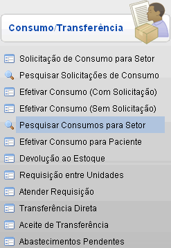
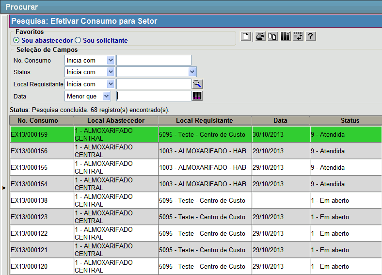

|
Pesquisar Consumos para Setor [ Voltar ]Esta tela permite o usuário localizar consumos por setor. O formulário "Pesquisar Consumos para Setor" encontra-se dentro do menu "Movimentações - Consumo/Transferência". 
Após clicar no formulário, o sistema abrirá a seguinte tela: 
Siga os passos abaixo para abrir um consumo para setor. 1º Passo: configure os filtros de acordo com suas necessidades. Utilize os filtros da pesquisa para localizar o consumo desejado. 2º Passo: selecione com um clique o consumo desejado. O usuário será direcionado à tela "Efetivar Consumo", onde poderá visualizar todos os detalhes do documento. Se desejar, clique no botão  [Relatório] para gerar o relatório "CONSUMO PARA SETOR ATENDIDO". [Relatório] para gerar o relatório "CONSUMO PARA SETOR ATENDIDO". |